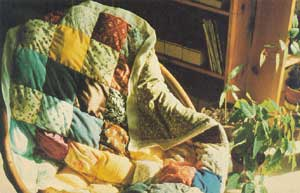

If you're female and have an office job, chances are you go through several pairs of pantyhose a week. A friend of mine (who works in a travel agency and earns a rather small salary) calculated that she works two days a month to pay for her hose. That figures out to 24 days a year-or about one work-month-wasted on the flimsy legwear!
It does, of course, seem a bit ridiculous to put that much labor into a nylon supply. There are ways to fight back, though. You could, for instance, go barelegged, wear pants, wear runny hose under boots and/or pants ... or take a pair with a left run and a pair with a right run, cut off the offending leg of each, and then put both pairs on. (Who's to know?)
Many of these solutions, however, only forestall the inevitable. Sooner or later, you'll pull on your pantyhose, and they'll do what they were designed to do: branch out into rivers, streams, rivulets, and rills of runs . . . and render themselves useless. Worse yet, these "longstockings" are about as biodegradable as plastic bags!
"They've just got to be good for something!" I used to wail, while gnashing my teeth over the waste.
I finally came up with an idea, though, and it's pretty good, if I do say so myself: Why not make a comforter out of them? After all, nylons are lightweight, easily cleaned, and they dry quickly without packing down. (I've found that hose can be used to stuff children's toys, too.)
So, round up your dead nylons and (of course) wash them. When the stockings are clean, cut off the elastic waistbands. (I can't think of any use for these, unless you're ranching tomatoes, in which case you now have lots of nice, soft, vine tie-ups.)
Then drag out your scrap fabric and reduce it all to four-inch quilt patches. The number of squares you'll need will depend on how big the bed you plan to cover is. Just figure that a 4-inch quilt square includes a 5/8-inch seam. allowance, which will give you a finished piece with 2-3/4" to a side. So, you'll need however many squares your bed is long by however many squares your bed is wide, times two. (The "times two" is because your comforter has a top and a bottom.)
To begin the coverlet, take two matching quilt pieces (or unmatching, if you prefer), and sew around the edges, leaving a 5/8" seam and an opening on one side to stuff in a pair of pantyhose.
(When I made my first quilt, I tried to use assorted white fabric to back each patch of color in an effort to make the colored material I had "go further". It was not a smart move! Not only wasn't the comforter reversible ... it looked so odious that I had to re-cover it!)
After you've sewn up all the quilt squares, clip the corners (but not the stitching!), turn the pouch right side out, square the four "right angles" with a chopstick or some such, and stuff each fabric "baggie" with a pair of pantyhose. When all the stockings are in all the "pockets", sew up the open edges with tiny overcast stitches. (You could machine-sew the holes shut, but it looks awful. I know . . . because I've tried it.)
Now, match the plump pillows up in attractive pairs and sew them together with small overcast stitches along one side. Continue until all your squares are paired. Then pair the pairs. (You could do this by butting the squares and using a machine with a zigzag stitch, but that, too, looks terrible!)
Then stitch the sets of four together, and so on. Don't get the bright idea of sewing the squares together in strips the length or width of your intended bed-warmer and then joining the strips together. They tend to stretch and warp when this is done, and the comforter won't come out even. Sets of four squares are more easily handled. (Again, this is the voice of experience speaking.)
Keep joining one block of pillows to another until the comforter is of a suitable size. At that point, it's finished . . . unless you want to trim the edges. To do this, bind each side with a strip of fabric or satin edging ribbon ... or make a blanket stitch all the way around with bright floss or yarn.
Your new comforter will have all the attributes of a down or dacron "puff which would cost upward of $100. It'll be light, warm, easily cleaned, personalized, gentle-on-the-world . . . and inexpensive!
Not only that . . . your mind will finally be eased-as mine was-by finding a use for those blankety-blank dead nylons!
|
 PHOTO BY THE AUTHOR |
|
|